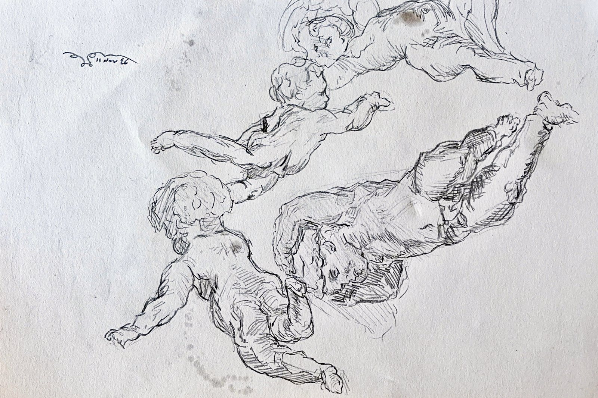
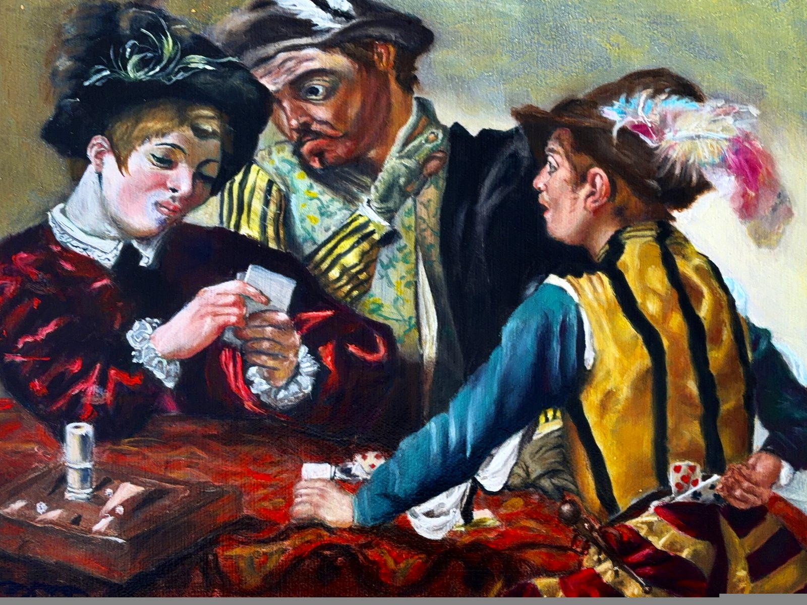
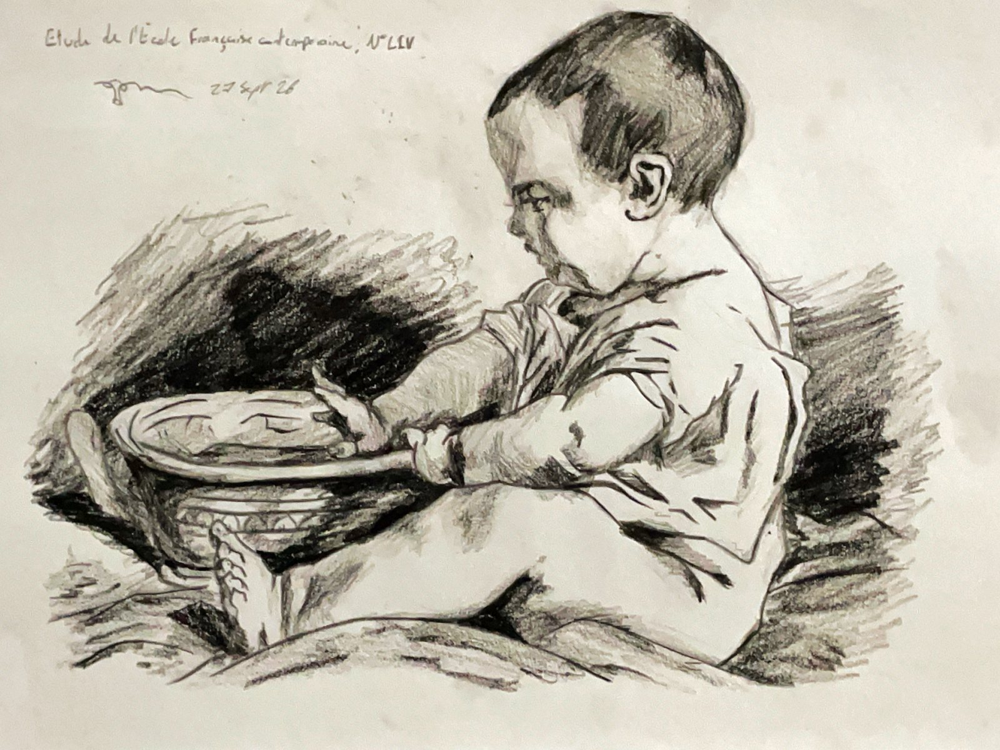
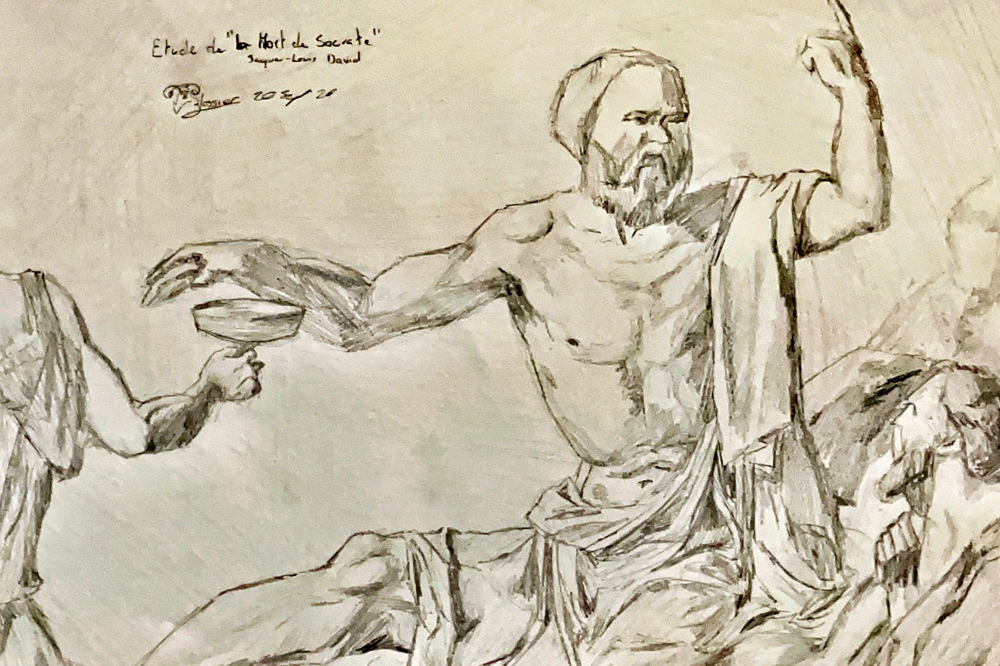

Portfolio
Manech
Dessins et peintures — 47 œuvres : 34 dessins (crayon, fusain, feutre) et 13 peintures (huile, acrylique).


Sélection récente

Poses d'anges italiens
11 novembre 2026 · Crayon de bois

Etude du Caravage, Les tricheurs
10 novembre 2026 · Huile sur toile (lin, 24x33)

Les débuts
9 octobre 2026 · Huile sur toile (lin 24x19)

Etude de Frans Hals, Jeune homme tenant un crâne
29 septembre 2026 · Crayon de bois

Etude de l'Ecole Française contemporaine, N°LIV
27 septembre 2026 · Crayons de bois

Etude de Jacques Louis David, La mort de Socrate (détail)
20 septembre 2026 · Crayon de bois